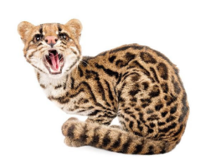
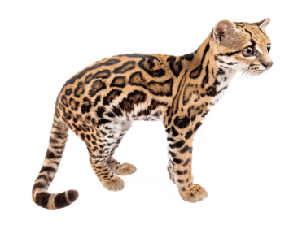
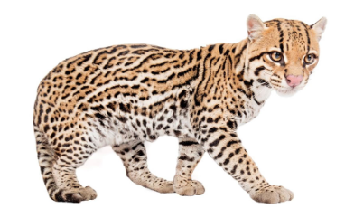
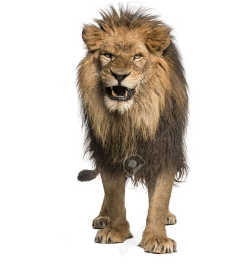
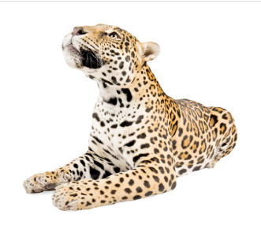
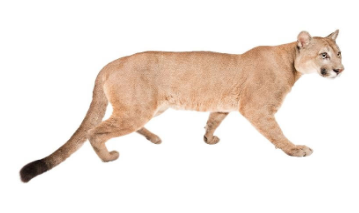

Los felinos son conocidos por el término “félidos”, provenientes de la familia de mamíferos placentarios y algunos de origen carnívoro, poseen un cuerpo esbelto de movimientos sigilosos y delicados, con un oído agudo, hocico corto y excelente vista.
En su mayoría consumen carne ignorando cualquier otra comida que no sea una presa viva a diferencia de los felinos domesticados como los gatos que son de tamaño pequeño y si bien comen ratones o animales vivos, también consumen comida especial para su especie.
Notoriamente, la mayor diversidad de Mamíferos del Ecuador se encuentra en los bosques húmedos del Trópico Oriental o Amazónico, con 206 especies que representan el 48% de la mastofauna nacional. Importante también es la cantidad de especies endémicas del país, que asciende a 41 (10,1% del total nacional) siendo el piso Altoandino el que más especies endémicas posee (17 en total).
Felinos en Zoo Animals
Existen una gran variedad de Felinos entre ellos estan:
-
Oncilla

-
Tigrillo Margay

-
Ocelote

-
Leon

-
Jaguar

-
Puma
